RUNBIRD ／ AI動画事業
打ち合わせでお伺いした内容をもとに、動画の構成案・シーン画像・アニマティック（テロップ入り）を作成いたしました。 現在はテロップを入れた静止画のアニマティックで、この後ナレーション・BGMを加えて本編を仕上げていきます。 内容にご意見・修正のご希望などございましたらお知らせください。
| # | 秒 | 映像 | テロップ |
|---|---|---|---|
| S01 | 0:00-0:04 | スーツ男性・作業着男性・買い物帰りの主婦・カップルが、それぞれの場面でちょこまに向かう様子を短いカットで連続提示 | いろんな人が、気軽に使っています |
| S02 | 0:04-0:07 | 白い建物にガラスの引き戸、黄色地の看板（動物キャラクターのイラスト） | 無人マッサージ屋 ちょこま 弘明寺／24時間営業 |
| S03 | 0:07-0:12 | ガラスの引き戸から店内に入り、靴をスリッパに履き替えて入店するカット | 予約不要。ふらっと入って、靴を履き替えるだけ |
| S04 | 0:12-0:17 | 空いているマッサージチェアに座る利用者（買い物帰りの主婦） | 空いている席へ、そのままどうぞ |
| S05 | 0:17-0:22 | チェアのひじ掛け付近でスマホをQRにかざして決済（現金・キャッシュレスどちらも対応） | 座って支払うだけ。すぐにマッサージが始まります |
| S06 | 0:22-0:27 | 作業着姿の男性がチェアで目を閉じて気持ちよさそうにマッサージを受ける | 10分 300円から。すきま時間に、ちゃんとほぐれる |
| S07 | 0:27-0:32 | 休日帰りのカップル・女性2名が並んで利用しているカット | 一人でも、二人でも。気軽に立ち寄れる |
| S08 | 0:32-0:37 | 誰もいない店内、無人でも清潔に整った空間の引き画 | 人に気を遣う必要なし。着替えもいりません |
| S09 | 0:37-0:43 | スマホでホームページの店舗利用状況ページを確認する手元カット | 今、店内に何人いるか。ホームページで事前に確認できます |
| S10 | 0:43-0:47 | スマホでちょこマイルのQRを読み取る手元カット | ちょこマイルで、来店のたびにお得に LINE友だち登録でもお得な情報をお届け |
| S11 | 0:47-0:50 | ロゴ＋QR＋住所・電話・24時間営業、明るい表情で店を出る利用者 | 無人マッサージ屋 ちょこま 弘明寺／神奈川県横浜市南区弘明寺町323 090-3831-3808／24時間営業 |
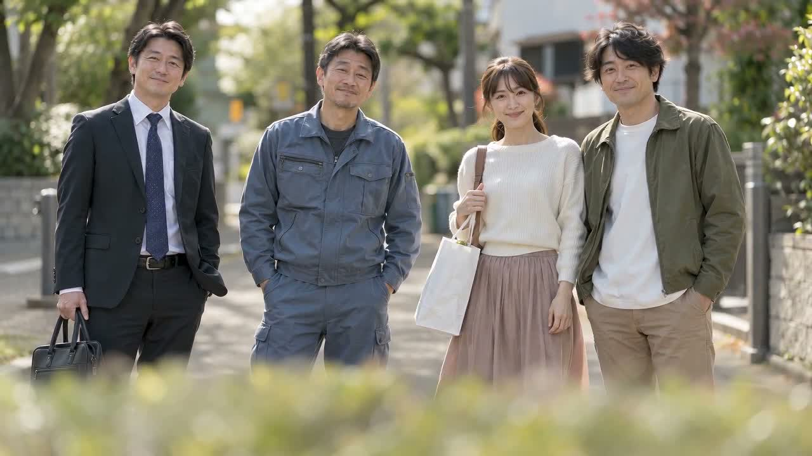
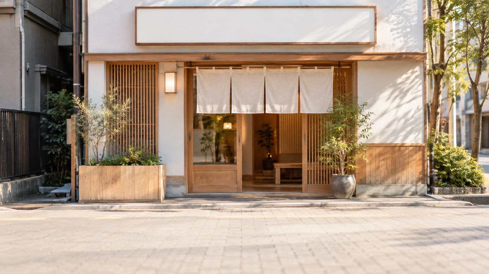
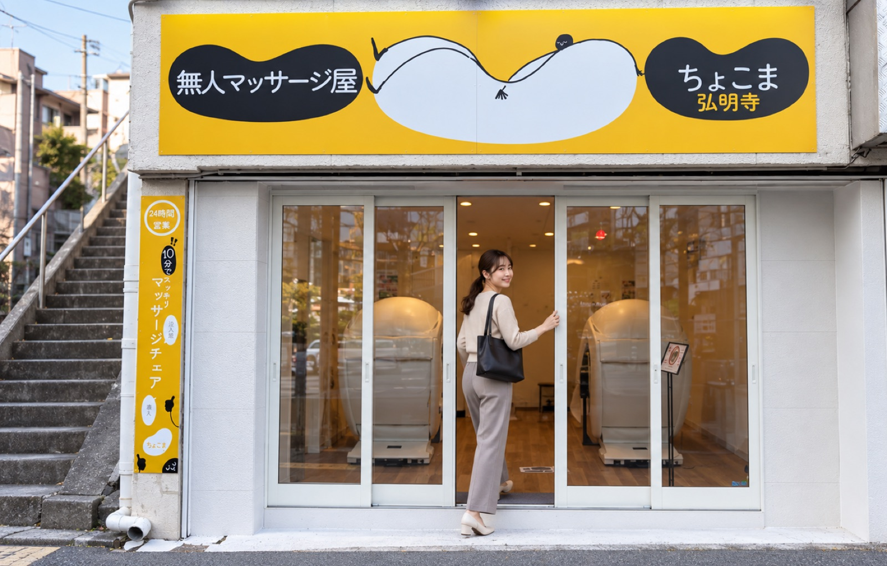
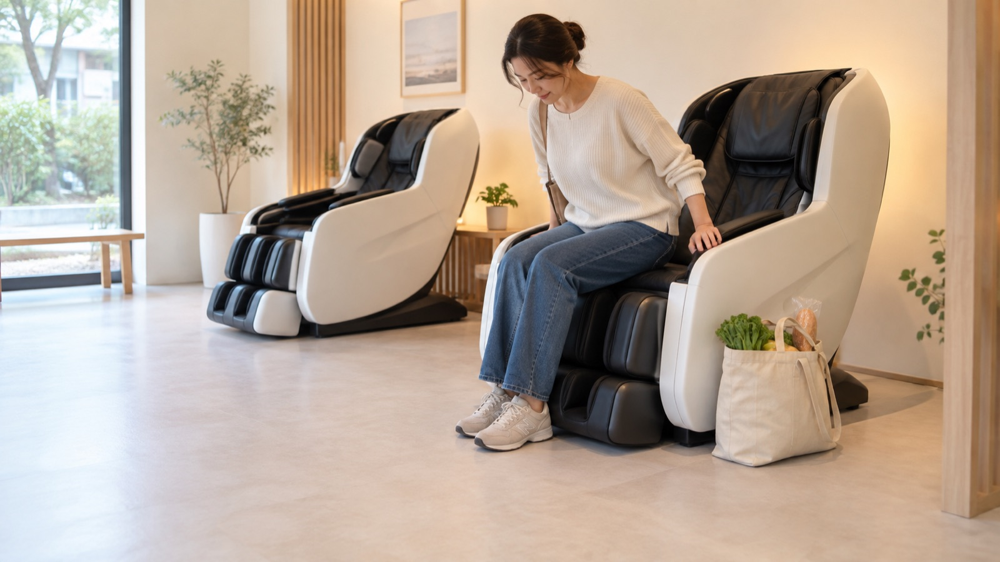
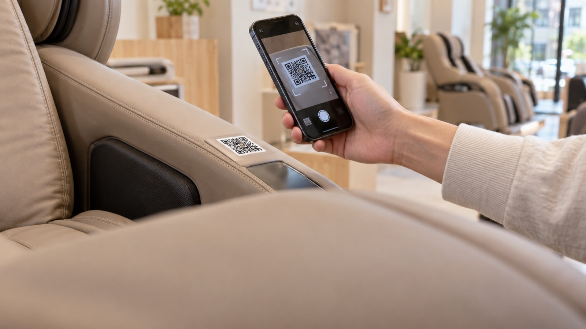
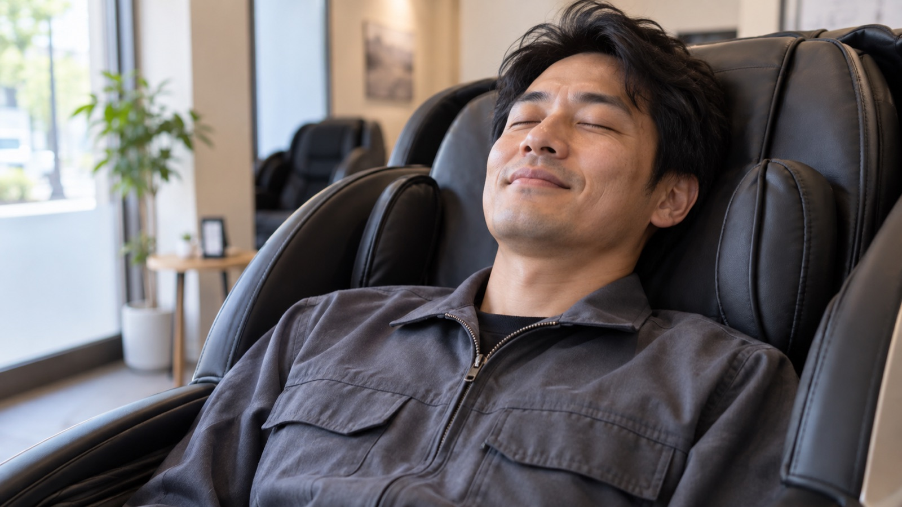
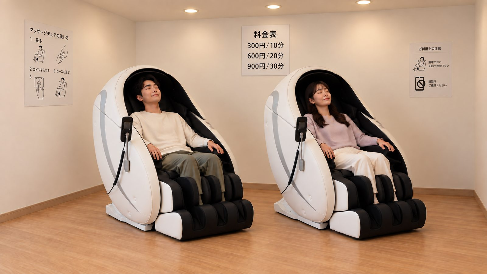
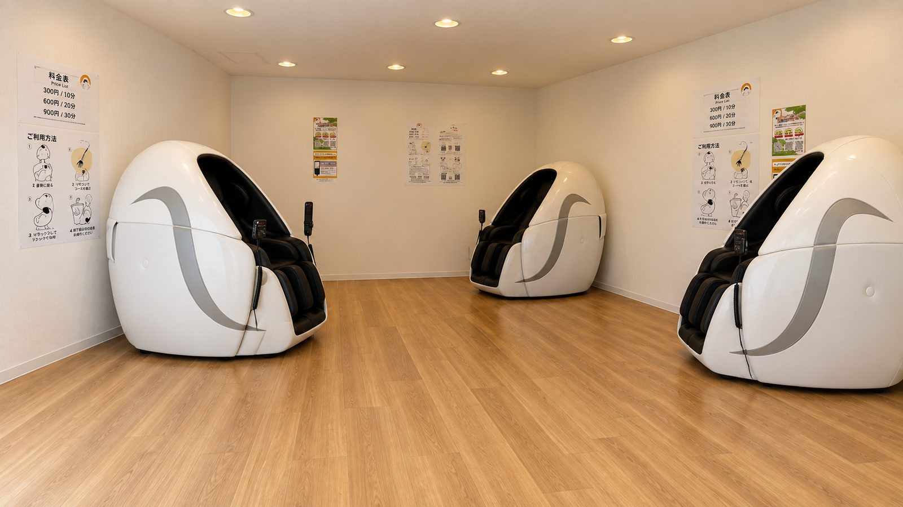
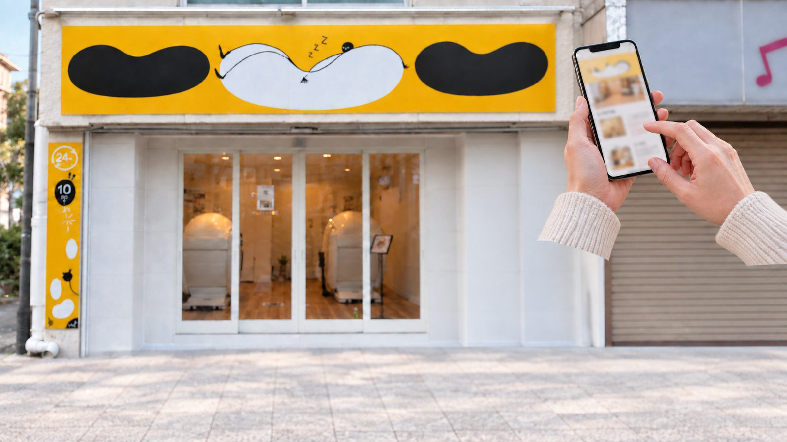
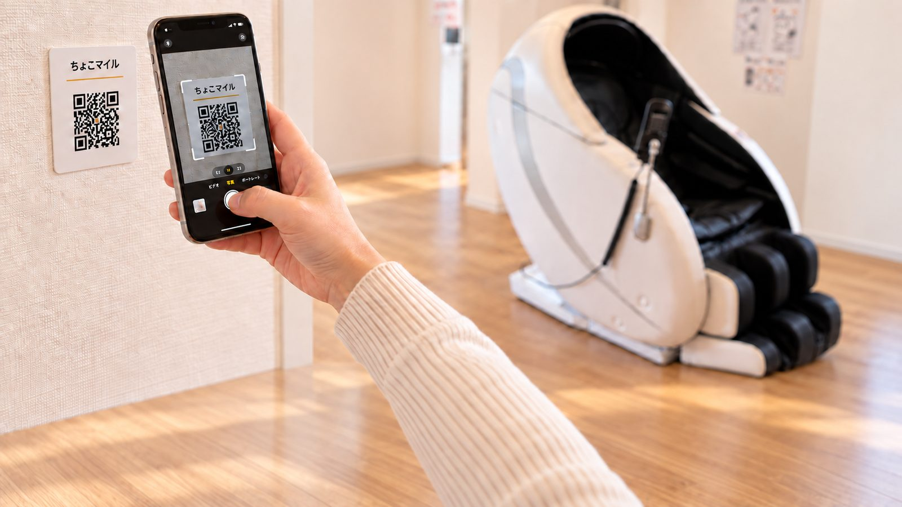
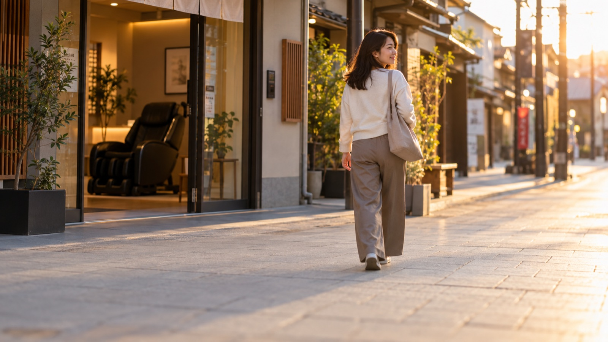
「無人・予約不要・着替え不要・ふらっと立ち寄れる」というコンセプトが近く、手続きの少なさ・スピード感を数字で見せる構成を参考にしています。